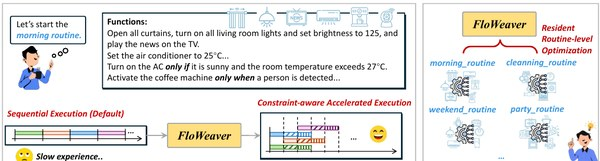
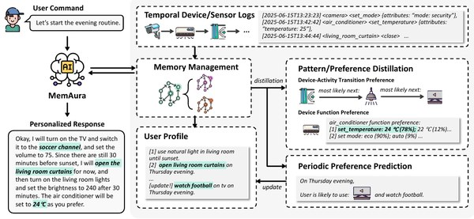
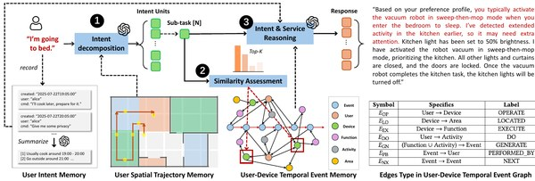
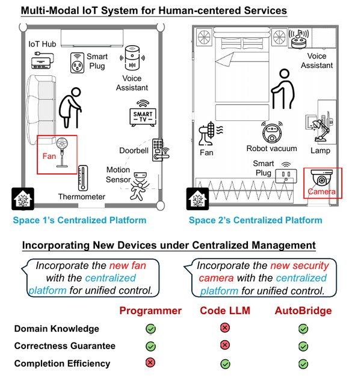

About
I am a third-year Ph.D. student in the Internet of Things (IoT) Thrust at The Hong Kong University of Science and Technology (Guangzhou), advised by Prof. Huangxun Chen. Before that, I received my B.S. degree in Computer Science and Technology from Harbin Institute of Technology (Shenzhen) in 2024.
My research focuses on:
- Multi-modality memory systems
- Proactive AI assistants
- Device acceleration and optimization in smart environments
I am always happy to discuss research and explore collaborations, so please feel free to reach out. I am also looking for postdoctoral opportunities after graduation.
News
Publications
-

-

-

-

Education
The Hong Kong University of Science and Technology (Guangzhou)
Ph.D. student, IoT Thrust · Advisor: Prof. Huangxun Chen
Sep 2024 – Present
Harbin Institute of Technology (Shenzhen)
B.S. degree in Computer Science and Technology
Sep 2020 – Jun 2024